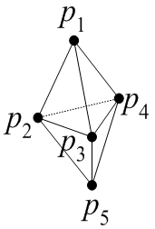

広告
・マトリックス作成
ある1つの要素について離散化を行い、 離散化式を導出しました。
質量収支式
\[
\begin{aligned}
&\left(
\frac{[C]}{5\Delta\tau}
+V_x[C_x]+V_y[C_y]+V_z[C_z]
\right)\{P\}^{\Delta\tau+\tau}\\
&\quad+\frac{1}{Ma^2}
\left(
[C_x]\{V_x\}^{\Delta\tau+\tau}
+[C_y]\{V_y\}^{\Delta\tau+\tau}
+[C_z]\{V_z\}^{\Delta\tau+\tau}
\right)
=
\frac{[C]}{5\Delta\tau}\{P\}^{\tau}
\end{aligned}
\]
運動量収支式
x成分
\[
\begin{aligned}
\frac{[C]}{\Delta\tau}\{V_x\}^{\tau+\Delta\tau}
&+\left(V_x[C_x]+V_y[C_y]+V_z[C_z]\right)\{V_x\}^{\tau+\Delta\tau}\\
&+\frac{1}{Re}\left\{
\left(2[S_{xx}]+[S_{yy}]+[S_{zz}]\right)\{V_x\}^{\tau+\Delta\tau}
+[S_{yx}]\{V_y\}^{\tau+\Delta\tau}
+[S_{zx}]\{V_z\}^{\tau+\Delta\tau}
+[C_x]\{P\}^{\tau+\Delta\tau}
\right\}\\
&=
\frac{[C]}{\Delta\tau}\{V_x\}^{\tau}
+\frac{2K^*}{We}n_x
\begin{bmatrix}1\\1\\1\\1\end{bmatrix}\frac{S}{3}
+g_x^*
\begin{bmatrix}1\\1\\1\\1\end{bmatrix}\frac{V}{4}
\end{aligned}
\]
y成分
\[
\begin{aligned}
\frac{[C]}{\Delta\tau}\{V_y\}^{\tau+\Delta\tau}
&+\left(V_x[C_x]+V_y[C_y]+V_z[C_z]\right)\{V_y\}^{\tau+\Delta\tau}\\
&+\frac{1}{Re}\left\{
[S_{xy}]\{V_x\}^{\tau+\Delta\tau}
+\left([S_{xx}]+2[S_{yy}]+[S_{zz}]\right)\{V_y\}^{\tau+\Delta\tau}
+[S_{zy}]\{V_z\}^{\tau+\Delta\tau}
+[C_y]\{P\}^{\tau+\Delta\tau}
\right\}\\
&=
\frac{[C]}{\Delta\tau}\{V_y\}^{\tau}
+\frac{2K^*}{We}n_y
\begin{bmatrix}1\\1\\1\\1\end{bmatrix}\frac{S}{3}
+g_y^*
\begin{bmatrix}1\\1\\1\\1\end{bmatrix}\frac{V}{4}
\end{aligned}
\]
z成分
\[
\begin{aligned}
\frac{[C]}{\Delta\tau}\{V_z\}^{\tau+\Delta\tau}
&+\left(V_x[C_x]+V_y[C_y]+V_z[C_z]\right)\{V_z\}^{\tau+\Delta\tau}\\
&+\frac{1}{Re}\left\{
[S_{xz}]\{V_x\}^{\tau+\Delta\tau}
+[S_{yz}]\{V_y\}^{\tau+\Delta\tau}
+\left([S_{xx}]+[S_{yy}]+2[S_{zz}]\right)\{V_z\}^{\tau+\Delta\tau}
+[C_z]\{P\}^{\tau+\Delta\tau}
\right\}\\
&=
\frac{[C]}{\Delta\tau}\{V_z\}^{\tau}
+\frac{2K^*}{We}n_z
\begin{bmatrix}1\\1\\1\\1\end{bmatrix}\frac{S}{3}
+g_z^*
\begin{bmatrix}1\\1\\1\\1\end{bmatrix}\frac{V}{4}
\qquad(i=1,2,3)
\end{aligned}
\]
次に、全ての要素についての離散化式を足し合わせて、1つの 大きな行列式を作成します。ここでは、簡単のために2つの要素について 行列式を作成します。

\[
\begin{aligned}
p_1&(v_{1x},v_{1y},v_{1z},p_1)\\
p_2&(v_{2x},v_{2y},v_{2z},p_2)\\
p_3&(v_{3x},v_{3y},v_{3z},p_3)\\
p_4&(v_{4x},v_{4y},v_{4z},p_4)\\
p_5&(v_{5x},v_{5y},v_{5z},p_5)
\end{aligned}
\]
\[
\left(
\begin{array}{ccccccc}
a_{11}&a_{12}&a_{13}&a_{14}&&a_{119}&a_{120}\\
a_{21}&a_{22}&a_{23}&a_{24}&&a_{219}&a_{220}\\
a_{31}&a_{32}&a_{33}&a_{34}&&a_{319}&a_{320}\\
a_{41}&a_{42}&a_{43}&a_{44}&&a_{419}&a_{420}\\
a_{51}&a_{52}&a_{53}&a_{54}&&a_{519}&a_{520}\\
a_{61}&a_{62}&a_{63}&a_{64}&&a_{619}&a_{620}\\
a_{71}&a_{72}&a_{73}&a_{74}&&a_{719}&a_{720}\\
a_{81}&a_{82}&a_{83}&a_{84}&&a_{819}&a_{820}\\
a_{91}&a_{92}&a_{93}&a_{94}&&a_{919}&a_{920}\\
a_{101}&a_{102}&a_{103}&a_{104}&&a_{1019}&a_{1020}\\
a_{111}&a_{112}&a_{113}&a_{114}&&a_{1119}&a_{1120}\\
a_{121}&a_{122}&a_{123}&a_{124}&&a_{1219}&a_{1220}\\
a_{131}&a_{132}&a_{133}&a_{134}&&a_{1319}&a_{1320}\\
a_{141}&a_{142}&a_{143}&a_{144}&&a_{1419}&a_{1420}\\
a_{151}&a_{152}&a_{153}&a_{154}&&a_{1519}&a_{1520}\\
a_{161}&a_{162}&a_{163}&a_{164}&&a_{1619}&a_{1620}\\
a_{171}&a_{172}&a_{173}&a_{174}&&a_{1719}&a_{1720}\\
a_{181}&a_{182}&a_{183}&a_{184}&&a_{1819}&a_{1820}\\
a_{191}&a_{192}&a_{193}&a_{194}&&a_{1919}&a_{1920}\\
a_{201}&a_{202}&a_{203}&a_{204}&&a_{2019}&a_{2020}
\end{array}
\right)
\left(
\begin{array}{c}
v_{1x}\\
v_{1y}\\
v_{1z}\\
p_1\\
v_{2x}\\
v_{2y}\\
v_{2z}\\
p_2\\
v_{3x}\\
v_{3y}\\
v_{3z}\\
p_3\\
v_{4x}\\
v_{4y}\\
v_{4z}\\
p_4\\
v_{5x}\\
v_{5y}\\
v_{5z}\\
p_5
\end{array}
\right)^{\tau+\Delta\tau}
=
\left(
\begin{array}{c}
v_{1x}\\
v_{1y}\\
v_{1z}\\
p_1\\
v_{2x}\\
v_{2y}\\
v_{2z}\\
p_2\\
v_{3x}\\
v_{3y}\\
v_{3z}\\
p_3\\
v_{4x}\\
v_{4y}\\
v_{4z}\\
p_4\\
v_{5x}\\
v_{5y}\\
v_{5z}\\
p_5
\end{array}
\right)^{\tau}
+
\left(
\begin{array}{c}
f_{11}\\
f_{12}\\
f_{13}\\
f_{14}\\
f_{21}\\
f_{22}\\
f_{23}\\
f_{24}\\
f_{31}\\
f_{32}\\
f_{33}\\
f_{34}\\
f_{41}\\
f_{42}\\
f_{43}\\
f_{44}\\
f_{51}\\
f_{52}\\
f_{53}\\
f_{54}
\end{array}
\right)
\]
行列式の大きさは、
5(節点の数)× 4(変数の数)=20
となります。仮に節点がn個の場合、行列式の大きさは、
n(節点の数)× 4(変数の数)=4n
となります。この行列式を解くことで、あるタイムステップにおける計算領域の物理量が 計算されます。
ラグラジアン座標では、質量収支式、運動量収支式を1つの マトリックスで表し、速度、圧力を同時に解く。上記はラグラジアン座標の マトリックスです。
オイラー座標では、質量収支式、運動量収支式は別々のマトリックスで表し、 速度、圧力は別々に解かれます。
| prev | | | up | | | next |